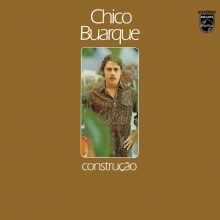
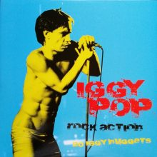
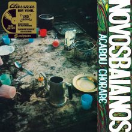
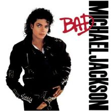

dioadjioadioaoidjas
Bem-vindo a nossa loja!
Para os amantes de discos.
Conheca a nossa loja
A DISCOO é uma loja conectada com a música, na DISCOO o cliente encontra uma diversidade enorme de discos, desde o vinil até os CDS. Nossa loja propõe para os amantes da música a oportunidade de comprar discos de vinil de uma coleção bem antiga ou das mais atuais.
Conheca nossos principais produtos nacionais e internacionais.

Chico Buarque - Construcao

Iggy Pop - Rock Action

Novos Baianos - Acabou Chorare

Bad - Michael Jackson
E para mantermos o maior nível de qualidade possível, trabalhamos considerando os itens:
-
Transparência, onde colocamos sempre qual a real condição do disco. Quando o disco é usado, sempre colocamos a foto real do produto que está sendo vendido.
-
Qualidade, fazemos um filtro nos discos usados e os que apresentem defeitos na execução são descartados e não vendidos na nossa loja. Para manter o alto nível de qualidade, limpamos todos os discos usados com um produto especial e trocamos os plásticos internos e externos. E caprichamos muito na embalagem, que é composta por plástico bolha + uma camada de papelão ondulado + Uma camada de papel pardo. Quando você compra um disco novo, também mandamos um plástico externo para que você possa manter ele bem protegido.
-
Agilidade, enviamos o pedido o mais rápido possível. Entendemos muito bem o que é a ansiedade de ter aquele disco tão desejado rodando na vitrola e nada dele chegar.